A 150 cc racing go-kart built by our university motorsports club for HKFC Season 5. I designed and analysed the brake and throttle pedals and the front stub axle in Ansys, and worked on chassis welding and fabrication.
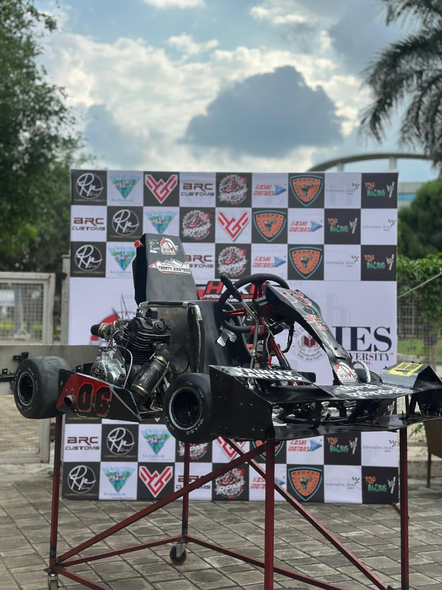
Designed the brake and throttle (rev) pedals in SolidWorks and ran static structural FEA in Ansys on the pedals and the front stub axle, checking stress, deflection and factor of safety under real loads.
Welding and grinding on the chassis, plus engine-side work such as replacing the spark plug and carburettor.
Load: 650 N on the pedal face, the maximum braking effort from the driver (about 65 kg). Supports at the pivot and mounting points.
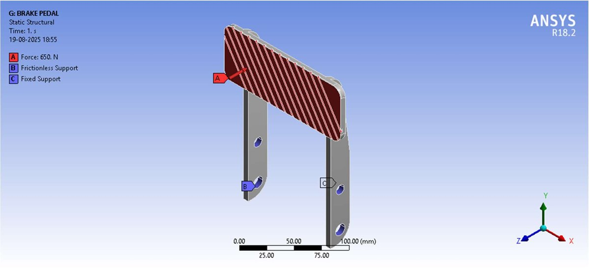
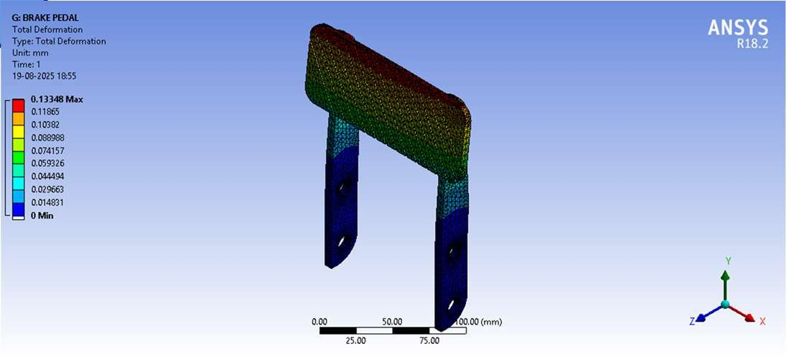
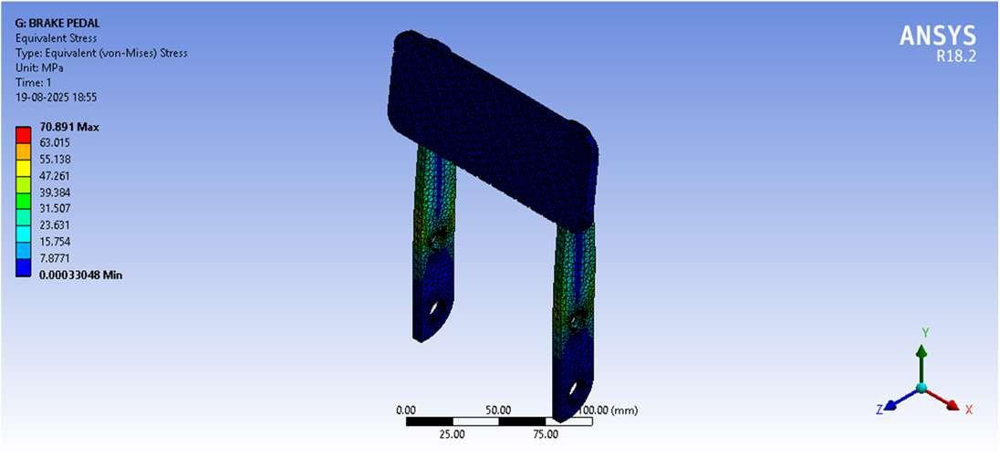
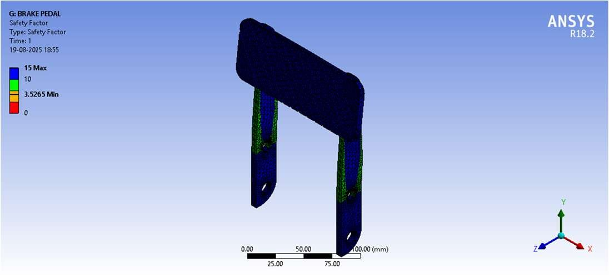
Load: 150 N, the continuous actuation force from the driver (about 15 kg), with rapid cycling during racing.
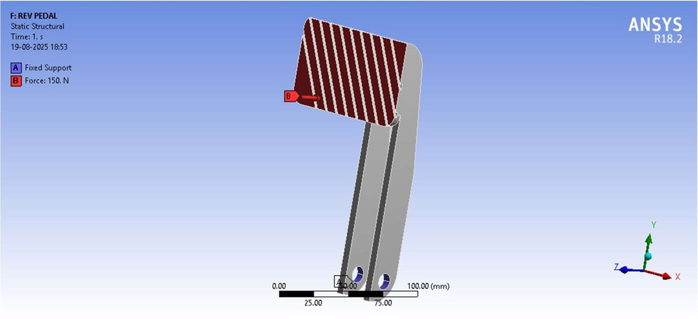
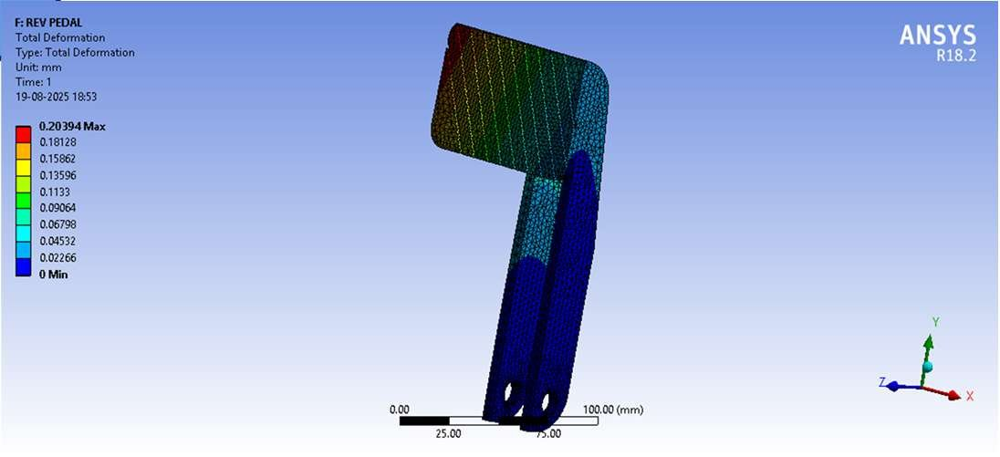
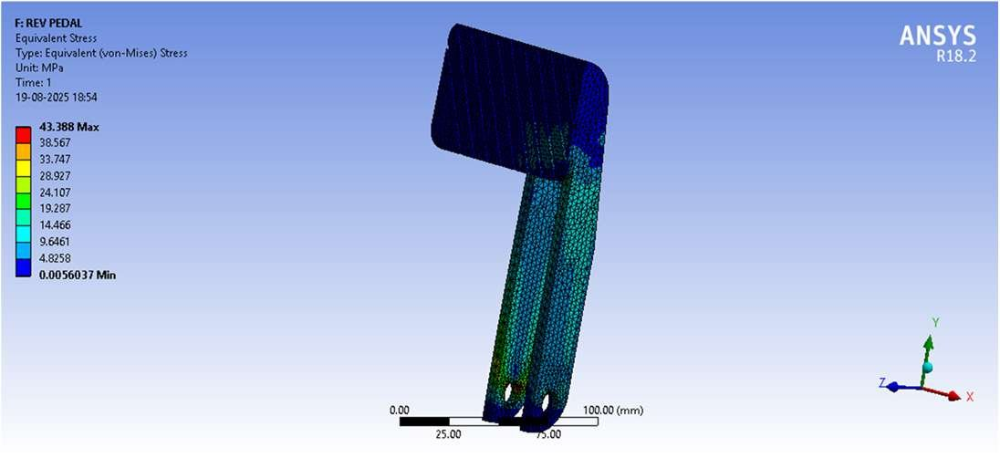
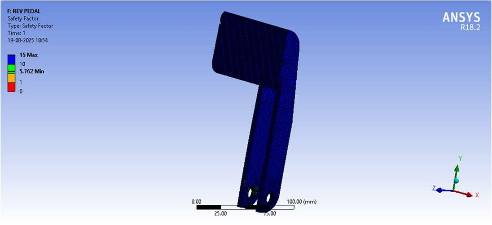
Load: 1100 N transferred to the front axle, so 550 N on each stub axle. Material: low-carbon steel.
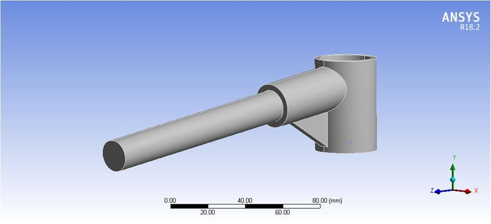
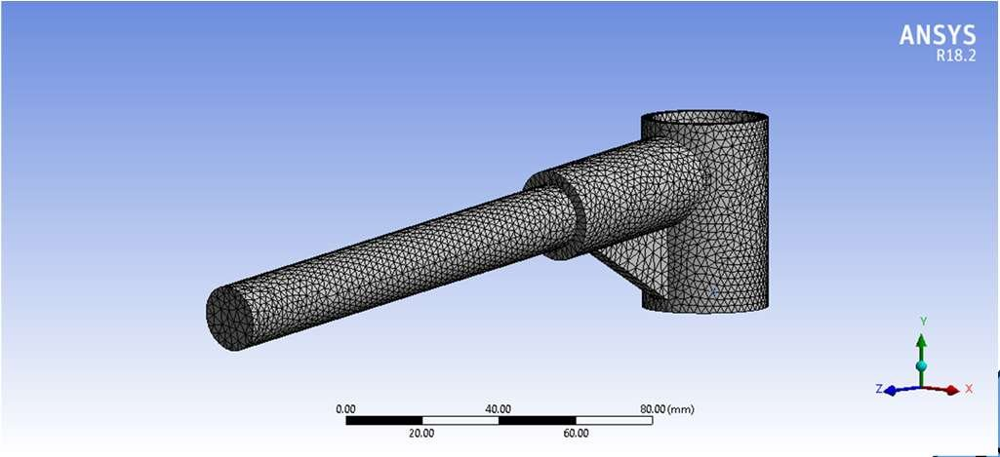
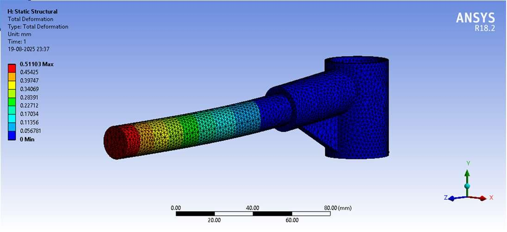
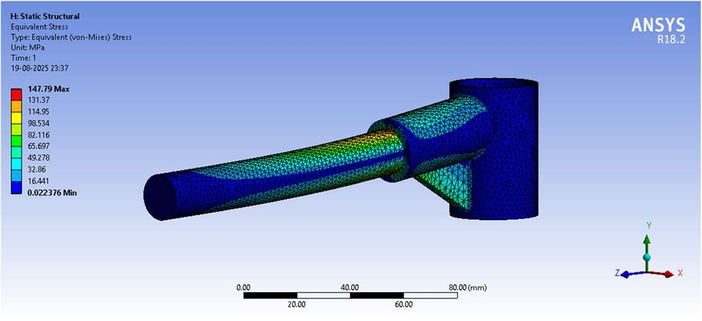
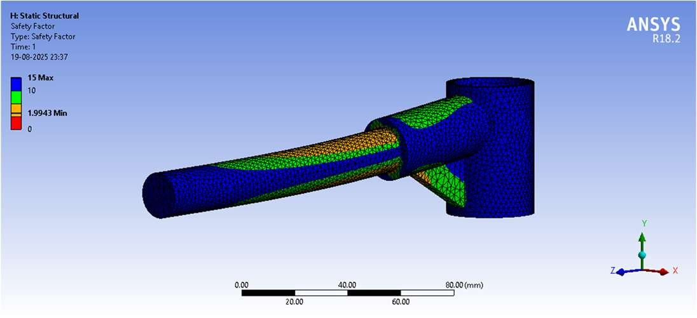
| Result | Brake pedal | Throttle pedal | Stub axle |
|---|---|---|---|
| Applied load | 650 N | 150 N | 550 N per stub |
| Max total deformation | 0.133 mm | 0.204 mm | 0.511 mm |
| Max von-Mises stress | 70.9 MPa | 43.4 MPa | 147.8 MPa |
| Minimum factor of safety | 3.53 | 5.76 | 1.99 |
| Mass (CAD) | 0.83 kg | 0.69 kg | — |
| Mesh | 55,588 nodes · 31,512 elements | 48,218 nodes · 27,322 elements | Tetrahedral |
All three parts stay within the elastic range. The pedals have large margins (FoS 3.5–5.8) and deflect by only fractions of a millimetre, so pedal feel stays firm. The stub axle carries the highest stress, 147.8 MPa, with a safety factor of about 2 under the front-axle load, which is acceptable for a low-carbon steel part.
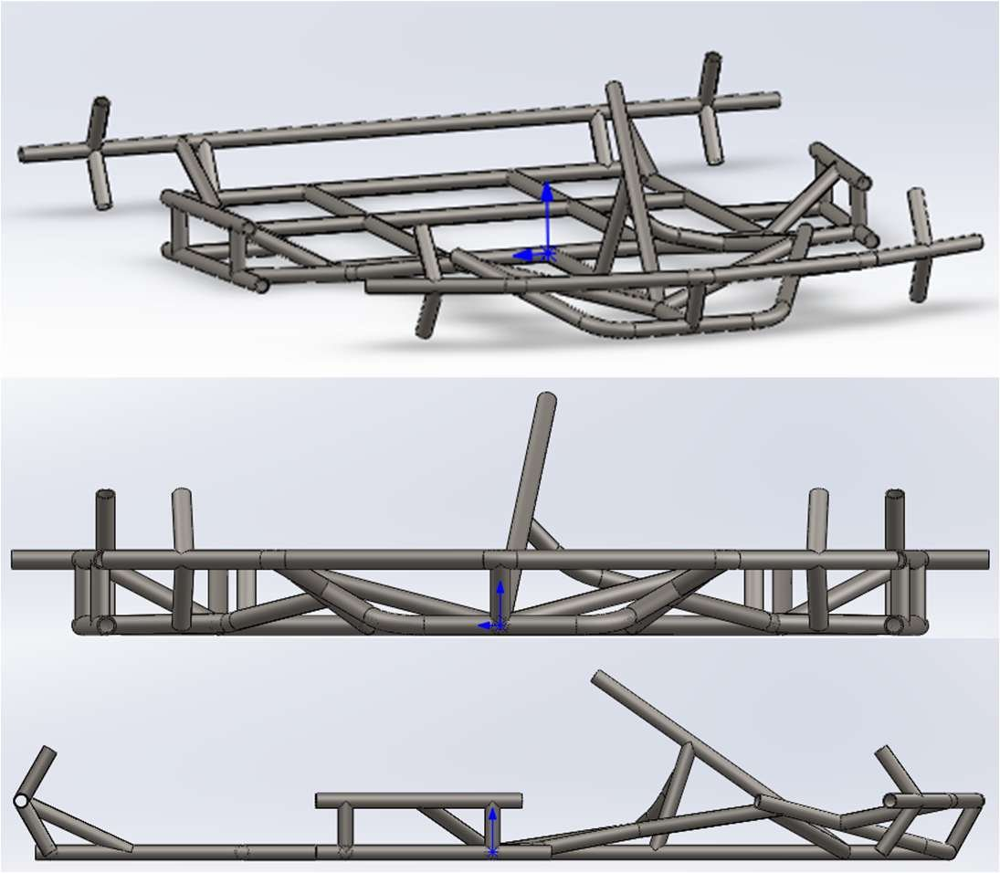
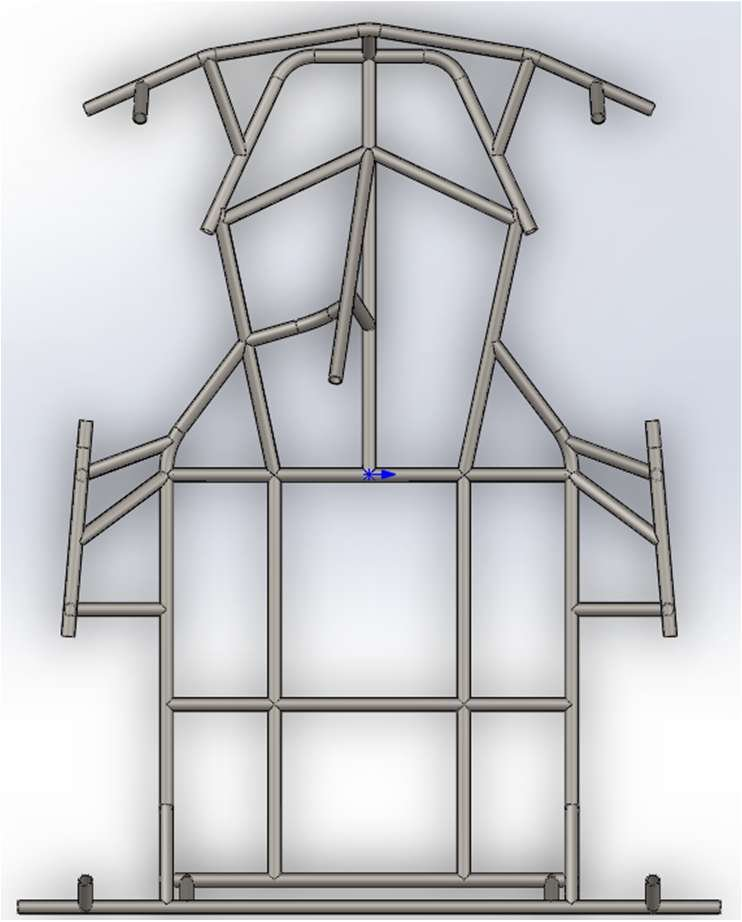
Setting realistic loads and supports, reading deformation, stress and safety-factor plots, and checking results against what makes sense physically.
Turning driver inputs into design loads (650 N braking, 150 N throttle) and sizing parts to stay stiff and safe under them.
Coordinating design, engine, steering and brake departments in a 25-member club to deliver a race-ready kart.